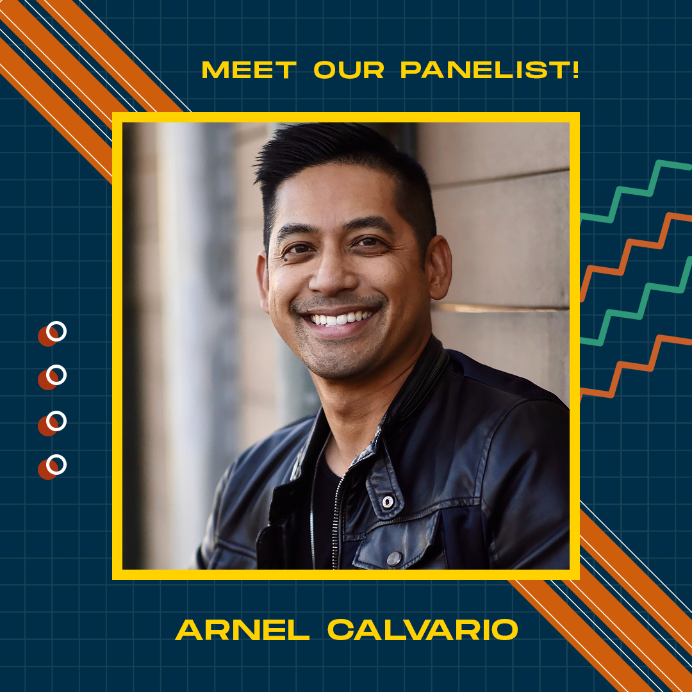
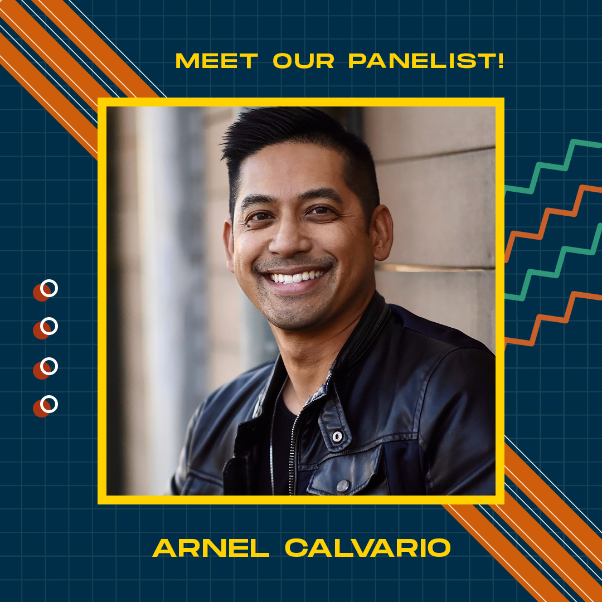

Dogs as musicals
Dogs as 5 different musicals I've watched (live and not live) over the years! I was part of the Fiddler production, working on the Lighting team as an electrician and a projections operator.
From left to right: Hamilton, Fiddler on the Roof, Aladdin, Hadestown, and High School Musical.


 
